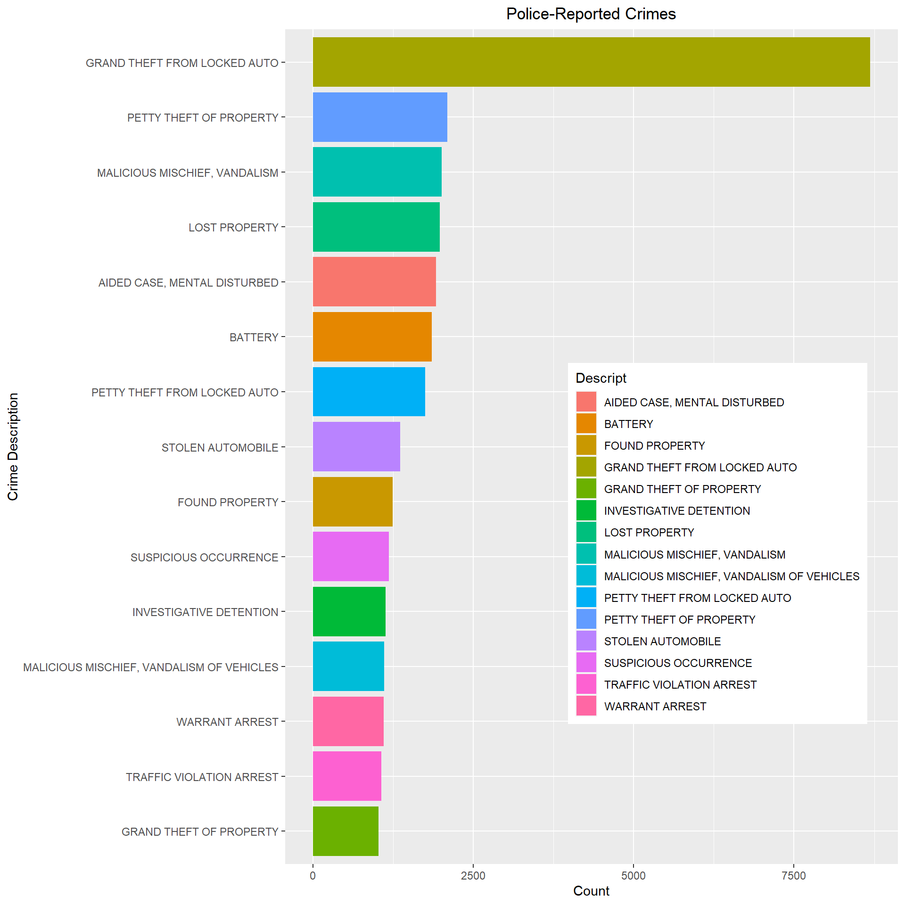
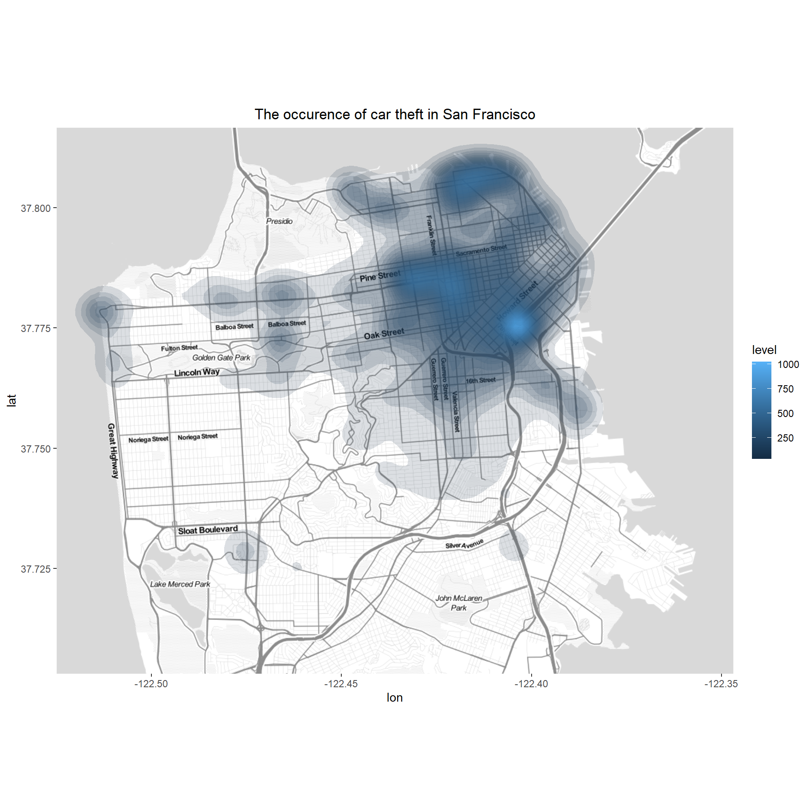

Introducing the data
The data was provided by SF open data, a governmental agency of the City and County of San Francisco that publishes data to improve decision-making and service delivery. Basically, the governing body of San Francisco made their data publicly available for data scientists to play around for fun and practice their data work skill.
For this project, we will be using R to read and manipulate our data. Findings will be communicated via plots and graphs. First of all, let us read the data set and load essential libraries.
Show code
# Load required packages
library(tidyverse) #for data manipulation
library(lubridate) #for date/time data management
library(maptools) #to load map data
library(ggmap) #to work with map data
# Read datasets and assign to variables
incidents <- read_csv("police-department-incidents.csv")
calls <- read_csv("police-department-calls-for-service.csv")
Data exploration
First things first: we need to wrap our heads around the data in order to understand what we have. We will use
glimpse()to explore the variable of both civilian-reported an police-reported crimeFor police-reported crime, we have incident number, incident category, date/time information, location of the crime, crime description, and the means in which the incident was resolved.
For civilian-reported crime, we have crime ID, date/time information, location, and crime description.
Show code
# Glimpse the structure of both datasets
glimpse(incidents)
Rows: 84,000
Columns: 13
$ IncidntNum <dbl> 176122807, 160569314, 160362475, 160435298, 90543~
$ Category <chr> "LARCENY/THEFT", "ASSAULT", "ROBBERY", "KIDNAPPIN~
$ Descript <chr> "GRAND THEFT FROM UNLOCKED AUTO", "BATTERY", "ROB~
$ DayOfWeek <chr> "Saturday", "Thursday", "Tuesday", "Friday", "Tue~
$ Date <dttm> 2017-05-13, 2016-07-14, 2016-05-03, 2016-05-27, ~
$ Time <time> 10:20:00, 16:00:00, 14:19:00, 23:57:00, 07:40:00~
$ PdDistrict <chr> "SOUTHERN", "MISSION", "NORTHERN", "SOUTHERN", "T~
$ Resolution <chr> "NONE", "NONE", "ARREST, BOOKED", "ARREST, BOOKED~
$ Address <chr> "800 Block of BRYANT ST", "MISSION ST / CESAR CHA~
$ X <dbl> -122.4034, -122.4182, -122.4299, -122.4050, -122.~
$ Y <dbl> 37.77542, 37.74817, 37.77744, 37.78512, 37.71912,~
$ Location <chr> "{'latitude': '37.775420706711', 'human_address':~
$ PdId <dbl> 1.761228e+13, 1.605693e+13, 1.603625e+13, 1.60435~Show code
glimpse(calls)
Rows: 100,000
Columns: 14
$ `Crime Id` <dbl> 163003307, 180870423, 173510362, 163272811~
$ Descript <chr> "Bicyclist", "586", "Suspicious Person", "~
$ `Report Date` <dttm> 2016-10-26, 2018-03-28, 2017-12-17, 2016-~
$ Date <dttm> 2016-10-26, 2018-03-28, 2017-12-17, 2016-~
$ `Offense Date` <dttm> 2016-10-26, 2018-03-28, 2017-12-17, 2016-~
$ `Call Time` <time> 17:47:00, 05:49:00, 03:00:00, 17:39:00, 0~
$ `Call Date Time` <dttm> 2016-10-26 17:47:00, 2018-03-28 05:49:00,~
$ Disposition <chr> "GOA", "HAN", "ADV", "NOM", "GOA", "ADV", ~
$ Address <chr> "The Embarcadero Nor/kearny St", "Ingalls ~
$ City <chr> "San Francisco", "San Francisco", "San Fra~
$ State <chr> "CA", "CA", "CA", "CA", "CA", "CA", "CA", ~
$ `Agency Id` <dbl> 1, 1, 1, 1, 1, 1, 1, 1, 1, 1, 1, 1, 1, 1, ~
$ `Address Type` <chr> "Intersection", "Intersection", "Intersect~
$ `Common Location` <chr> NA, NA, NA, NA, NA, NA, "Midori Hotel Sro ~- We have 84,000 cases of police-reported crime and 100,000 cases of civilian reported crime.We will then aggregate the number of incidents by date for both civilian-reported an police-reported crime for comparison.
Show code
# Aggregate the number of reported incidents by date
daily_incidents <- incidents %>%
count(Date, sort = TRUE) %>%
rename(n_incidents = n)
# Aggregate the number of calls for police service by date
daily_calls <- calls %>%
count(Date, sort = TRUE) %>%
rename(n_calls = n)
# Join data frames to create a new "mutated" set of information
shared_dates <- inner_join(daily_incidents, daily_calls, by = c("Date" = "Date"))
# Take a glimpse of this new data frame
head(shared_dates, 10)
# A tibble: 10 x 3
Date n_incidents n_calls
<dttm> <int> <int>
1 2017-03-01 00:00:00 124 133
2 2017-09-01 00:00:00 124 138
3 2016-04-01 00:00:00 120 124
4 2017-03-17 00:00:00 118 129
5 2016-11-25 00:00:00 117 115
6 2017-06-25 00:00:00 114 120
7 2017-05-25 00:00:00 111 127
8 2017-08-28 00:00:00 110 106
9 2017-09-28 00:00:00 110 124
10 2017-11-27 00:00:00 110 108- We can see that the number of civilian-reported incident is generally lower than the number of police-reported incidence. Sometime, people dialed 911 for police to check on suspicious activities, which might be or might not be an actual crime.
Inspect frequency trends
- Let us visualize the number of a plot to compare both incidents at a big picture.
Show code
# Gather into long format using the "Date" column to define observations
plot_shared_dates <- shared_dates %>%
gather(key = report, value = count, -Date)
# Plot points and regression trend lines
ggplot(plot_shared_dates, aes(x = Date, y = count, color = report)) +
geom_point() +
geom_smooth(method = "lm", formula = y ~ x)

- The plot above visualizes he frequency of calls and incidents across time for us to see if there is any relationships between both civilian-reported and police-reported incident. We also have regression lines that cut across the plot to determine the trend in which the data is going.
Correlation between trends
To make the relationship more understandable, we could calculate a correlation value between the number of both incident types to see how they get along with each other.
A quick refresh on correlation, this value ranges from -1 to 1 as a representation of relationships between two sets of data. The closest the value is to 1 or -1, the stronger the relationship can be. Positive value indicates that the two variables go the same way while negative value indicates otherwise (direction of the two variables are opposite; that is, X increases while Y decreases).
Show code
# Calculate correlation coefficient between daily frequencies
daily_cor <- cor(shared_dates$n_incidents, shared_dates$n_calls)
daily_cor
[1] 0.1469688- The correlation is not that much. Just 0.146, but what if we look at a broader perspective by summarising the data into monthly counts and calculating a correlation coefficient.
Show code
# Summarise frequencies by month
correlation_df <- shared_dates %>%
mutate(month = month(Date)) %>%
group_by(month) %>%
summarize(n_incidents = sum(n_incidents),
n_calls = sum(n_calls))
# Calculate correlation coefficient between monthly frequencies
monthly_cor <- cor(correlation_df$n_incidents, correlation_df$n_calls)
monthly_cor
[1] 0.970683- The correlation is .97! I wonder why this is the case. Maybe breaking the data into days format would make it too detailed as correlations might be more apparent if the data is separated into clusters (month, in this case). But I won’t look too much into it as this is not the focus on this entry.
Filtering joins
ATTN Nerds: When working with relational datasets, there are situations in which it is helpful to subset information based on another set of values. Filtering joins are a complementary type of join which allows us to keep all specific cases within a data frame while preserving the structure of the data frame itself.
It will be helpful to have all the information from each police reported incident and each civilian call on their shared dates so we can calculate similar statistics from each dataset and compare results. This step will prepare us to make the pattern more apparent with data visualization.
Show code
# A tibble: 6 x 14
`Crime Id` Descript `Report Date` Date
<dbl> <chr> <dttm> <dttm>
1 163003307 Bicyclist 2016-10-26 00:00:00 2016-10-26 00:00:00
2 180870423 586 2018-03-28 00:00:00 2018-03-28 00:00:00
3 173510362 Suspicious Person 2017-12-17 00:00:00 2017-12-17 00:00:00
4 163272811 911 Drop 2016-11-22 00:00:00 2016-11-22 00:00:00
5 172811002 Drugs 2017-10-08 00:00:00 2017-10-08 00:00:00
6 170902193 At Risk 2017-03-31 00:00:00 2017-03-31 00:00:00
# ... with 10 more variables: Offense Date <dttm>, Call Time <time>,
# Call Date Time <dttm>, Disposition <chr>, Address <chr>,
# City <chr>, State <chr>, Agency Id <dbl>, Address Type <chr>,
# Common Location <chr>Show code
head(incidents_shared_dates)
# A tibble: 6 x 13
IncidntNum Category Descript DayOfWeek Date Time
<dbl> <chr> <chr> <chr> <dttm> <tim>
1 176122807 LARCENY/~ GRAND THEF~ Saturday 2017-05-13 00:00:00 10:20
2 160569314 ASSAULT BATTERY Thursday 2016-07-14 00:00:00 16:00
3 160362475 ROBBERY ROBBERY, B~ Tuesday 2016-05-03 00:00:00 14:19
4 160435298 KIDNAPPI~ KIDNAPPING~ Friday 2016-05-27 00:00:00 23:57
5 180018692 VEHICLE ~ STOLEN MOT~ Sunday 2018-01-07 00:00:00 18:00
6 176045481 LARCENY/~ GRAND THEF~ Wednesday 2017-02-15 00:00:00 20:00
# ... with 7 more variables: PdDistrict <chr>, Resolution <chr>,
# Address <chr>, X <dbl>, Y <dbl>, Location <chr>, PdId <dbl>- The above tables are some examples of civilian-reported and police-reported crimes when grouped together by dates. It will all make sense when we plot them all into graphs below.
Crime categories
- Now we need to see what the data look like after joining the datasets. Previously, we have a scatter plot to see if there was a trend in the frequency of calls and the frequency of reported incidents over time. Scatterplots are a great tool to look at overall trends of continuous data. However, to see trends in categorical data, we need to visualize the ranked order of the variables to understand their levels of importance.
Show code
# Create a bar chart of the number of calls for each crime
plot_calls_freq <- calls_shared_dates %>%
count(Descript) %>%
top_n(15, n) %>%
ggplot(aes(x = reorder(Descript, n), y = n, fill = Descript)) +
geom_bar(stat = 'identity') +
ylab("Count") +
xlab("Crime Description") +
ggtitle("Civilian-Reported Crimes") +
coord_flip()+
theme(plot.title = element_text(hjust = 0.5))
# Output the plots
plot_calls_freq

- From the plot above, passing call was ranked as the most frequent cause for civilian-reported crime, following by traffic stop and homeless complaint.
Show code
# Create a bar chart of the number of reported incidents for each crime
plot_incidents_freq <- incidents_shared_dates %>%
count(Descript) %>%
top_n(15, n) %>%
ggplot(aes(x = reorder(Descript, n), y = n, fill = Descript)) +
geom_bar(stat = 'identity') +
ylab("Count") +
xlab("Crime Description") +
ggtitle("Police-Reported Crimes") +
coord_flip()+
theme(plot.title = element_text(hjust = 0.5))+
theme(
legend.position = c(.95, .60),
legend.justification = c("right", "top"),
legend.box.just = "right",
legend.margin = margin(6, 6, 6, 6)
)
plot_incidents_freq

- The number of grand theft from locked auto is off-the-chart! This means there were several police-reported incident where unsupervised vehicles are broken into. What happened here?
Grand theft auto
- My friends in the States told me that never leave your belongings in your parked car, especially if the number of grand theft auto crime is high in the area. However, there may be good citizens iut there trying to prevent crime. The 12th most civilian reported crime is “Auto Boost / Strip”, which could be the case where they are trying to prevent the grand theft auto crime. Yet, this is probably only the case where the location of a called-in-crime is similar to the location of crime incidence. Let’s check to see if the locations of the most frequent civilian reported crime and police reported crime are similar.
Show code
# Arrange the top 10 locations of called in crimes in a new variable
location_calls <- calls_shared_dates %>%
filter(Descript == "Auto Boost / Strip") %>%
count(Address) %>%
arrange(desc(n))%>%
top_n(10, n)
# Arrange the top 10 locations of reported incidents in a new variable
location_incidents <- incidents_shared_dates %>%
filter(Descript == "GRAND THEFT FROM LOCKED AUTO") %>%
count(Address) %>%
arrange(desc(n))%>%
top_n(10, n)
# Output the top locations of each dataset for comparison
location_calls
# A tibble: 11 x 2
Address n
<chr> <int>
1 1100 Block Of Point Lobos Av 21
2 3600 Block Of Lyon St 20
3 100 Block Of Christmas Tree Point Rd 18
4 1300 Block Of Webster St 12
5 500 Block Of 6th Av 12
6 800 Block Of Vallejo St 10
7 1000 Block Of Great Hy 9
8 100 Block Of Hagiwara Tea Garden Dr 7
9 1100 Block Of Fillmore St 7
10 3300 Block Of 20th Av 7
11 800 Block Of Mission St 7Show code
location_incidents
# A tibble: 10 x 2
Address n
<chr> <int>
1 800 Block of BRYANT ST 441
2 500 Block of JOHNFKENNEDY DR 89
3 1000 Block of POINTLOBOS AV 84
4 800 Block of MISSION ST 61
5 2600 Block of GEARY BL 38
6 3600 Block of LYON ST 36
7 1300 Block of WEBSTER ST 35
8 1100 Block of FILLMORE ST 34
9 22ND ST / ILLINOIS ST 33
10 400 Block of 6TH AV 30Density map
- The police-reported dataset shares locations where auto crimes occur and are reported most frequently - such as on Point Lobos Avenue, Lyon Street, and Mission Street. We will plot the frequency of auto crime occurrence on the map of San Francisco.
Show code
# Read it into R as a spatial polygons data frame & plot
neighb <- readShapePoly("SF_neighborhoods")
# Define the bounding box
bbox <- neighb@bbox
# Manipulate these values slightly so that we get some padding on our basemap between the edge of the data and the edge of the map
sf_bbox <- c(left = bbox[1, 1] - .01, bottom = bbox[2, 1] - .005,
right = bbox[1, 2] + .01, top = bbox[2, 2] + .005)
# Download the basemap
basemap <- get_stamenmap(
bbox = sf_bbox,
zoom = 13,
maptype = "toner-lite")
Show code
# Filter grand theft auto incidents
auto_incidents <- incidents_shared_dates %>%
filter(Descript == "GRAND THEFT FROM LOCKED AUTO")
# Overlay a density plot of auto incidents on the map
ggmap(basemap) +
stat_density_2d(
aes(x = X, y = Y, fill = ..level..), alpha = 0.15,
size = 0.01, bins = 30, data = auto_incidents,
geom = "polygon") +
labs(title="The occurence of car theft in San Francisco") +
theme(plot.title = element_text(hjust = 0.5))

- From the map above, the blue spot means there was a higher rate of grand theft auto crime occurring in that area. Maybe the police could consider patrolling that area more frequently.
Conclusion and key takeaways
- From the data, we can see that the grand theft from locked vehicles crime usually occurs at some specific areas in the city. We could further investigate that area specifically to address the cause or potentially lessen the problem. It is interesting in how open data can benefit both the learning of independent data scientists (those who work with data for fun) and the government at the same time.